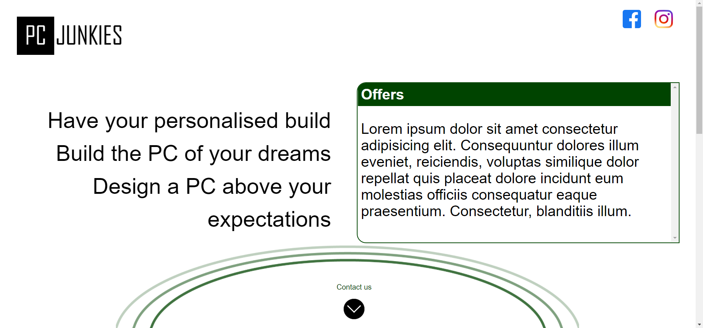
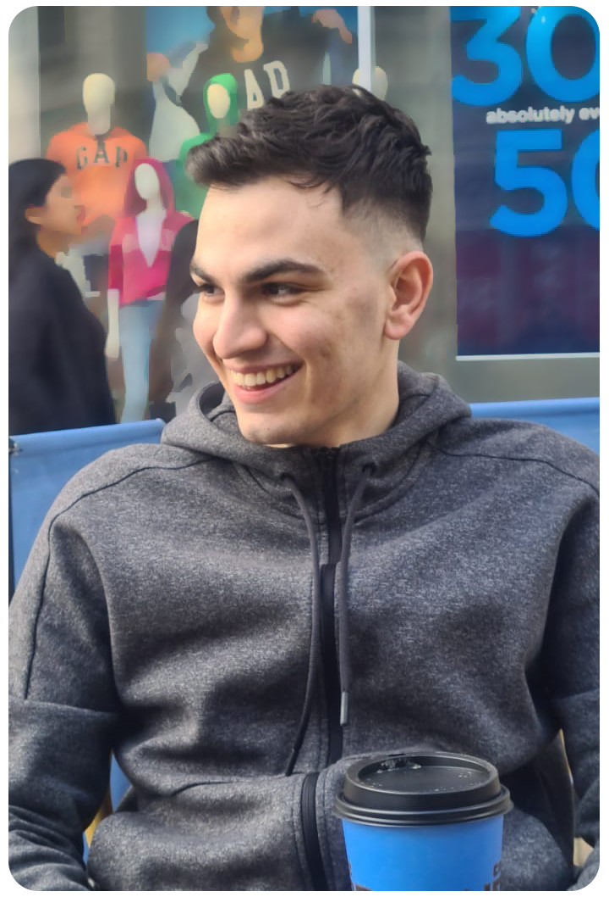
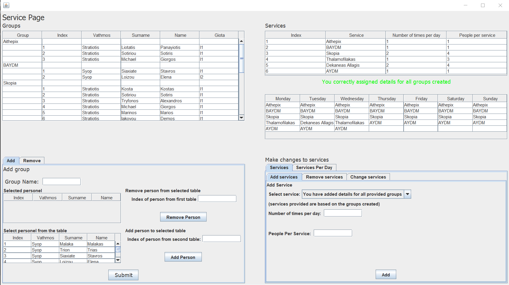
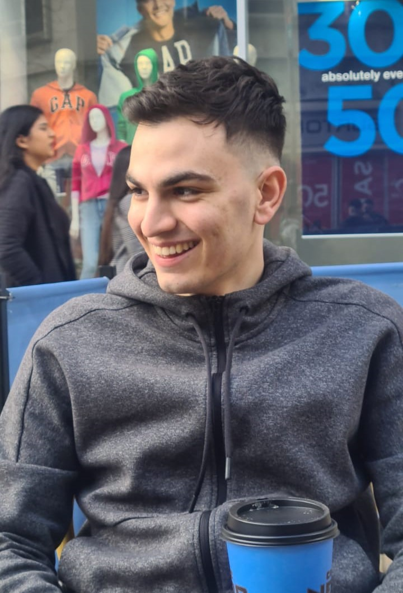

View project ↗01
Web development · Brand site
PC Junkies
An advertising website for a small team that builds custom computers.
Software engineer · full-stack developer
Computer Science graduate and engineer from Cyprus, building useful software across the stack—with care for the details people actually feel.

FIG. 01ENGINEER / MAKER / HUMANconst mindset = {
curious: true,
done: false
};02 / Selected work
A selection of projects across web, automation, and intelligent systems. Old work, new interface—for now.

View project ↗Web development · Brand site
An advertising website for a small team that builds custom computers.

Case study / archivedScheduling · Automation
A personnel and services management tool inspired by first-hand military experience.
Dissertation · Developer tooling
A VS Code extension that detects responsive layout failures and suggests repairs.
03 / Capabilities
From first sketch to production logic, I’m happiest where product thinking and engineering meet.
Responsive interfaces, robust server logic, and the systems connecting them.
Turning data and algorithms into practical tools for real-world problems.
Structured problem solving with a bias toward simple, maintainable outcomes.
04 / Journey log
The environments, study, and lived experience behind the code.
Summer 2022
Worked across client and internal projects using Ruby on Rails, Spina CMS, Docker, and Kubernetes. Built product features, Rails gems for email and payments, and new web experiences.
BSc
Focused on intelligent systems, software analysis, web technologies, 3D graphics, speech and text processing, robotics, and the Internet of Things.
Always
Side projects spanning computer vision, reinforcement learning, scheduling tools, web platforms, robotics, and connected devices.

CY / 34.7° N05 / Behind the screen
I’m Sotiris, born in Limassol, Cyprus. My first interaction with computing was an ECDL class at twelve—and the curiosity never really switched off.
Since then, I’ve learned multiple programming languages, studied Computer Science at Sheffield, and kept building my skills through practical problems.
Away from a keyboard, I play guitar, cook for friends, watch a lot of football, and bring the organisation and resilience I learned serving in the Cypriot army.
06 / Experimental layer
A space for future prototypes, fragments, and things that do not need a business case.
Watching for useful patterns at the edge of technology and design.
Reserved for what comes next.
“Make it work,
make it clear,
then make it sing.”
07 / Start a conversation
I’m always interested in ambitious products, difficult engineering challenges, and good conversations.
Let’s build something↗s.sotiriou62@gmail.com